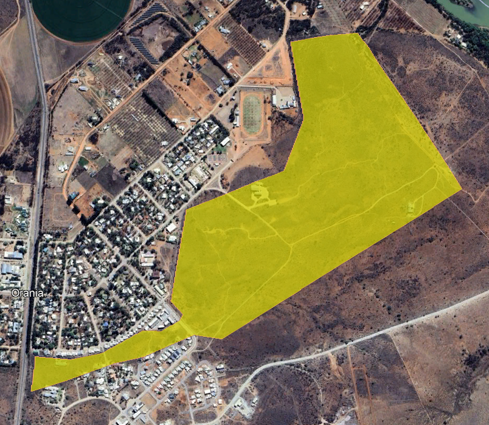
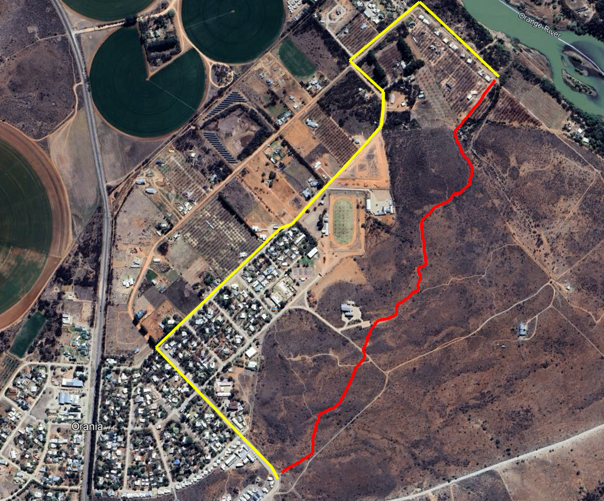

'n Groenstrook is 'n begroeide gedeelte in 'n stad of 'n beplante stuk grond langs beboude areas. Seker die bekendste voorbeeld van so 'n groenstrook is Central Park in New York, VSA.

'n Groenstrook is 'n begroeide gedeelte in 'n stad of 'n beplante stuk grond langs beboude areas. Seker die bekendste voorbeeld van so 'n groenstrook is Central Park in New York, VSA.
Daar is talle redes hoekom stedelike ontwerpers ruim voorsiening maak vir die skepping en instandhouding van groenstroke. Kortliks kom dit daarop neer dat groenstroke legio voordele inhou vir beide mens en dier. Hoewel Orania geensins New York is nie, is dieselfde beginsels ook hier van toepassing. Juis vir daardie rede maak die afdeling Beplanning en Grondgebruik van die Orania Dorpsraad voorsiening vir die skep van 'n hele netwerk van groenstroke tydens die uitleg van enige nuwe ontwikkelings. Hierdie groenstroke is met ander woorde gedeeltes van ons grondgebied wat nooit bebou sal word nie en gereserveer word vir die bewaar van natuurlike plantegroei, die skep van parke vir ontspanning en dies meer.
Een van die grootste groenstroke binne Orania, is die gedeelte oos van die stormwaterkanaal wat rofweg suidwes-noordoos deur Orania loop. Hierdie is 'n baie rowwe aanduiding van min of meer watter gebied ons hier na verwys:
Ons is van mening dat groenstroke nie net braak gelaat moet word nie, maar dat dit so toeganklik as moontlik vir inwoners en toeriste moet wees. Ons sal graag wil sien dat mense die groenstroke nie net vir ontspanning gebruik nie, maar dat daar 'n netwerk van paadjies geskep word wat die beweging van mense vergemaklik. Dit is dus vir ons aangenaam om die volgende roete binne hierdie groenstrook bekend te stel. Ons noem dit die Sandbaai-voetpaadjie. Dit word voorgestel deur die rooi lyn op die kaart hieronder.
Hierdie voetpaadjie se beginpunt is by Meester-se-Draai, waar Smaragstraat en Soetdoringstraat by mekaar aansluit. Dit volg vir 'n entjie dieselfde paadjie as wat tans na die Monumentkoppie toe loop, maar swenk dan spoedig weg na regs van waar dit verby die Ierse monument gaan en dan verby die oostekant van die Gemeenskapsaal. Van daar volg dit vir 'n wyle 'n bestaande grondpad, maar breek na 'n rukkie weg na links en kies dan koers in die rigting van die koppie agter die rugbyveld. Sodra dit die koppie bereik, volg dit die kontoer regs om die koppie van waar dit dan via 'n 2.5 meter wye korridor tussen privaat aandeleblokke afdaal tot waar dit by Sandbaai eindig.
Hierdie roete is nagenoeg 1783 meter lank. In teenstelling daarmee, is die afstand vanaf Meester-se-Draai tot by Sandbaai, indien 'n mens via Diamantlaan sou stap (die geel lyn in die bostaande kaart), ongeveer 2679 meter lank. Hierdie voetpaadjie is met ander woorde nie net mooier nie, maar ook 'n volle 33% (of 900 meter) korter! Ons beplan om nog heelwat verbeteringe aan te bring op en langs hierdie paadjie. Op die huidige stadium is dit nie werklik geskik vir fietse nie, aangesien dit baie klipperig is. Ons wil hierdie situasie wel regstel, sodat fietsryers ook die voordeel van die paadjie sal kan geniet. Verder beplan ons om duidelike rigtingaanwysers, rusplekkies, asblikke en waterpunte oral langs die roete op te rig. Hierdie roete is geensins besonder veeleisend om te stap nie en ons sal graag wil sien dat soveel as moontlik mense daarvan gebruik maak en dat dit mettertyd ook in 'n toeriste-aantreklikheid sal ontwikkel, waar natuurliefhebbers die prag van die Bo-Karoo van naderby kan beskou.
Dit is wel belangrik dat almal van ons hierdie voetpad op 'n verantwoordelike wyse benut. As 'n mens moeite doen en bietjie om jou rondkyk terwyl jy stap, sal jy opmerk dat daar die wonderlikste plantegroei langs hierdie roete voorkom - van die kleinste vetplantjies tot die grootste soetdoringbome. Dit moet egter in gedagte gehou word dat daar tans nog geen geriewe soos asblikke of toilette langs die roete is nie. Ons doen dus 'n beroep op u om nie rommel te strooi of op enige ander wyse skade aan te rig nie. Die Bo-Karoo ekosisteem is baie broos en moet met deernis en respek hanteer word. Hierdie is immers ons erfenis en ons sal dit graag aan die volgende geslag wil nalaat in dieselfde (indien nie beter nie) toestand as wat ons dit gekry het. Ons maak staat op u bedagsaamheid en samewerking.
Verder versoek ons dat u asseblief die privaatheid van inwoners, wat reg langs die roete woon, sal respekteer. Dit het veral betrekking op die gedeelte tussen die noordekant van die koppie en Sandbaai. Een van die struikelblokke wat ons teëgekom het gedurende die beplanning van hierdie roete, was dat daar nie ʼn direkte konneksie tussen die koppie en Sandbaai was wat op openbare grond langs loop nie. Twee grondeienaars het goedgunstiglik elk 'n 2.5 meter strook van hul grond afgestaan om die totstandkoming van hierdie voetpad moontlik te maak. Sonder hierdie twee eienaars se onselfsugtige gebaar, sou hierdie roete nooit ‘n werklikheid geword het nie en daarvoor is ons hulle die grootste dank verskuldig.
Soos voorheen genoem, is hierdie nie ʼn besonder veeleisende roete nie en sal die meeste mense wat oor gemiddelde fiksheid beskik, dit met gemak kan baasraak. Daar is in ieder geval mos geen haas nie en mens sien per slot van rekening baie meer raak as jy teen 'n rustige pas beweeg. Beplan om so rondom 20 tot 30 minute te neem om die roete te voltooi (een rigting). Vir diegene wat sou belangstel, hier is 'n aanduiding van die roete op “Google Maps”. Dit kan op ʼn loopfoon oopgemaak word en so oral saamgeneem word.
Nog beter, hier is die roete in Garmin formaat indien u ‘n geskikte toep op u foon het om dit mee oop te maak. Hierdie lêer maak dit moontlik om die roete stap vir stap te kan volg op u foon of GPS
Laastens wil ons u graag daarop wys dat hierdie steeds 'n natuurgebied is, wat met die normale gevare gepaard gaan. Ons het nog nie baie slange daar teëgekom nie, maar daar is verseker van hulle in die omgewing. Soos my oupa altyd vir ons as kinders gesê het: "Kyk voor jou voete as jy loop".
Hierdie is ‘n pragtige roete om die unieke natuurskoon van die Orania omgewing aan oud en jonk bekend te stel. Neem dus gerus die hele familie en vriende saam. Pak ‘n flessie koffie en iets om aan te peusel en gaan verken ons natuurerfenis.